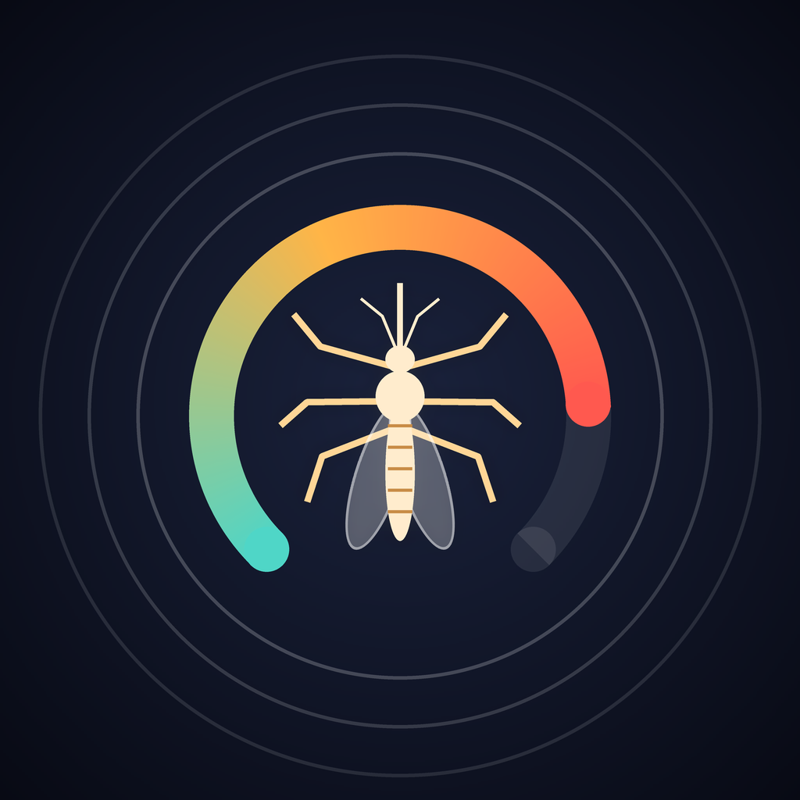

Vızz
Vızz, telefonunun mikrofonuyla sivrisineğin kanat sesini dinler ve onu bulmana yardım eder. Gece Modu sen uyurken sessizce sayar, sabah kaç sivrisinek geldiğini gösterir. Ses kaydedilmez, hiçbir veri telefonundan çıkmaz.
Sık sorulan sorular
Radar vızıltıyı duymuyor
Sivrisinek ancak birkaç on santimetre yakındayken duyulabilir. Klimayı, vantilatörü ve televizyonu kapat, telefonun alt kenarını (mikrofon) sesin geldiği yöne tut. Profil ekranındaki hassasiyet ayarını artırmayı da deneyebilirsin.
Mikrofon izni vermedim, nasıl açarım?
Ayarlar → Vızz → Mikrofon anahtarını aç.
Gece Modu telefon kilitliyken çalışıyor mu?
Evet. Başlattıktan sonra telefonu kilitleyebilirsin. Dinleme sürdüğü sürece ekranın üstünde turuncu mikrofon göstergesi görünür. Sabah uygulamayı açıp "Günaydın"a bastığında dinleme durur ve rapor açılır. Gece boyunca dinlemek pil harcadığı için telefonu şarja takmanı öneririz.
Rapordaki "en az 2 sivrisinek" nasıl hesaplanıyor?
Her sivrisineğin kanat sesi kendine özgü bir perdede çıkar. Vızz gece duyduğu vızıltıları perdelerine göre gruplar ve belirgin farklı her grubu ayrı bir sivrisinek sayar. Aynı perdedeki iki sivrisinek tek sayılabileceği için bu bir alt sınırdır.
Vızz sivrisinekleri kovar mı?
Hayır. Ses yayarak sivrisinek kovan uygulamaların işe yaradığına dair bilimsel bir kanıt yok. Vızz ses yaymaz, sadece dinler. Korunma için uygulamadaki "Korunma" sekmesine bak.
Aboneliği nasıl iptal ederim?
Ayarlar → [adın] → Abonelikler → Vızz Plus → Aboneliği İptal Et. Uygulamadaki Profil ekranından da yönetebilirsin. Ücretsiz deneme bitmeden en az 24 saat önce iptal edersen ücret alınmaz.
Telefonumu değiştirdim, aboneliğim görünmüyor
Aynı Apple Kimliği ile giriş yaptığından emin ol, sonra Profil ekranındaki "Satın alımları geri yükle"ye dokun.
İletişim
Hata bildirimi, öneri ya da soruların için destek sayfasında yeni bir kayıt aç.